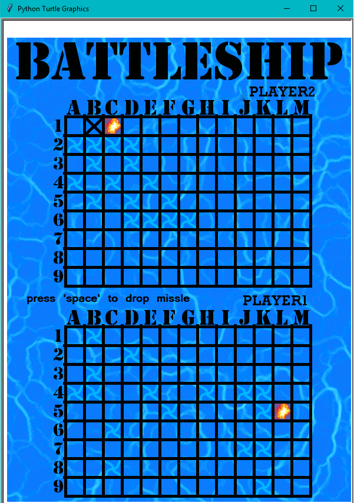

As one of my first programs in college I was tasked with creating a game in python for a command line interface. This game was to be a 10x8 that different sized ships would be randomly generated onto and the user had to sink all the ships.
I decided to make my game more advanced and created the full game of Battleship with graphics and finished within the same deadline.
I spent very little time creating the images use in this project, focusing mostly on function. This makes the game visually look awful.
The program starts with a main menu giving you the option to choose how many players. ‘one player’ is you versus the computer, and ‘two player’ is with two users taking turns.
These images show the game. The first image shows boats being placed, the second shows the attacking phase.
While setting up your boats, you are prevented from moving or rotating a ship outside the grid. When all your ships are placed it will become the second players turn to place theirs (or the computers who places them near instantly).
During the attack phase you move a cursor around the grid to choose a place to fire, misses and hits are marked with different images. You and player two (or the computer) take turns firing until all of one person’s ships have been sunk, they are the loser.
Scope: this was my first project that was more then a simple learning exercise. The original assignment was meant to be simple, but I greatly increased the scope. I had to consider the deadline and work efficiently, which for the proof of concept/learning programs I had written previously, time wasn’t a concern. I had to cut corners (graphics) and leave out some features I wanted (different missile sizes, a not 100% RNG computer player). This project helped me decide for all future projects how much more can I do then the recommended assignment.
Importance of OOP and Separation of Concerns: When doing this project, I had no idea about OOP or why/how you’d want to separate code in different files. The next semester, when we learned OOP this project was an amazing point of reference for me. Sometimes its hard to see why a concept would be useful when the program your writing to learn is very small. I was able to understand the usefulness quickly when I would think of it’s use case in my battleship program. EX. When we first learned about objects most people thought it was a more complicated way to make a variable, where I thought back to the 4 dimensional array I was using to store boat information. Or when my class learned about things like separating graphics code from calculating code, I could remember how difficult it was to navigate and modify my code until I separated it.
Comments: All programs I’ve created up until this point where short and only preformed one task, because of this I didn’t fully understand why commenting was stressed so much. As my program grew, I quickly found out how important they were; when I was wasting time trying to figure out what the chunk of code I wrote the previous day did. Because of my lack of OOP, comments were vital in understanding what each place in the many multi-dimensional arrays were storing.
The files for Python Battleship can be found here
https://github.com/srjamesjr/srjamesjr.github.io/tree/master/ProjectFiles/Python